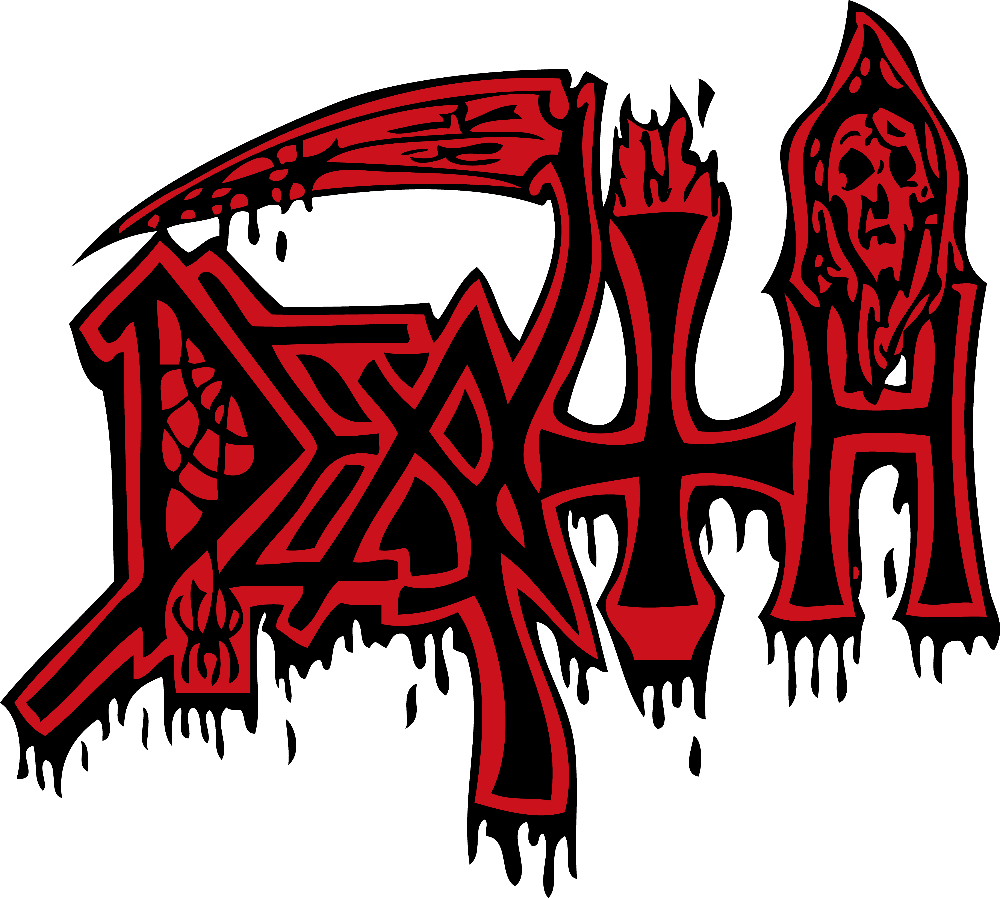
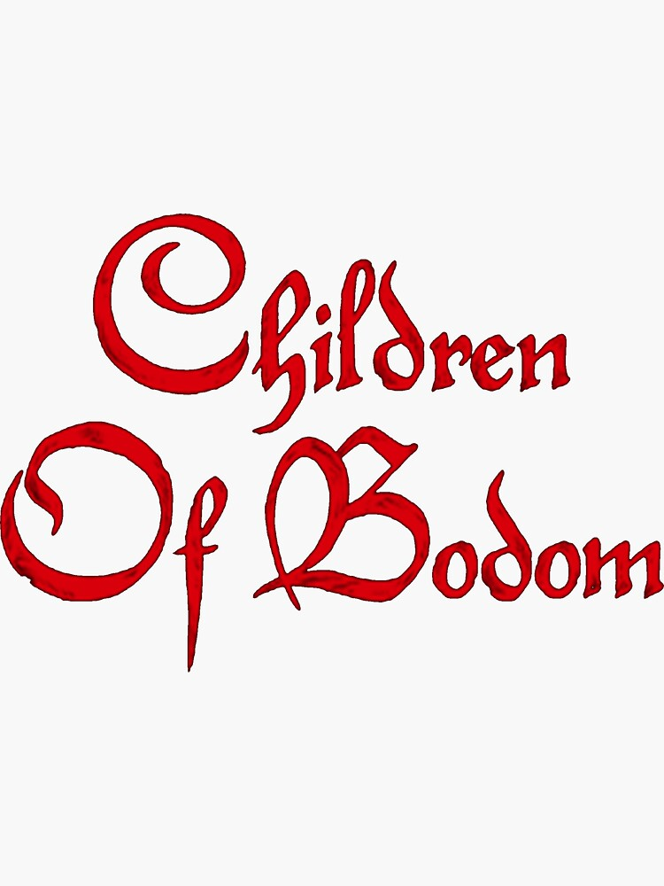
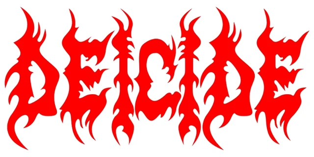
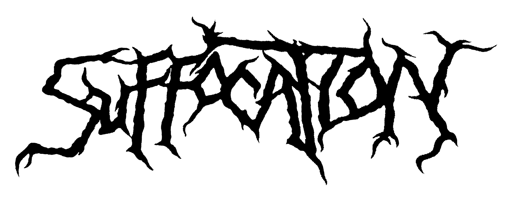

Death Metal Legends - Diskografia

Death
Pioneeri death metal -yhtye Floridasta, tunnettu teknisestä taituruudestaan ja monimutkaisista kappaleistaan.
Näytä Diskografia- Scream Bloody Gore (1987)
- Leprosy (1988)
- Spiritual Healing (1990)
- Human (1991)
- Individual Thought Patterns (1993)
- Symbolic (1995)
- The Sound of Perseverance (1998)

Children of Bodom
Suomalainen melodista death metalia soittava yhtye, joka oli aktiivinen vuosina 1993-2019.
Näytä Diskografia- Something Wild (1997)
- Hatebreeder (1999)
- Follow the Reaper (2000)
- Hate Crew Deathroll (2003)
- Are You Dead Yet? (2005)
- Blooddrunk (2008)
- Relentless Reckless Forever (2011)
- Halo of Blood (2013)
- I Worship Chaos (2015)
- Hexed (2019)

Morbid Angel
Morbid Angel on yksi death metal -genren vaikutusvaltaisimmista yhtyeistä, joka on ollut toiminnassa vuodesta 1983 lähtien.
Näytä Diskografia- Altars of Madness (1989)
- Blessed Are the Sick (1991)
- Covenant (1993)
- Domination (1995)
- Formulas Fatal to the Flesh (1998)
- Gateways to Annihilation (2000)
- Heretic (2003)
- Illud Divinum Insanus (2011)
- Kingdoms Disdained (2017)

Deicide
Deicide on yhdysvaltalainen death metal -yhtye, joka tunnetaan räjähtävästä energiastaan ja voimakkaista teemoistaan.
Näytä Diskografia- Deicide (1990)
- Legion (1992)
- Once Upon the Cross (1995)
- Serpents of the Light (1997)
- Insineratehymn (2000)
- In Torment in Hell (2001)
- Scars of the Crucifix (2004)
- The Stench of Redemption (2006)
- Till Death Do Us Part (2008)
- To Hell with God (2011)
- In the Minds of Evil (2013)
- Overtures of Blasphemy (2018)

Suffocation
Suffocation on legendaarinen death metal -bändi, joka tunnetaan brutaalista musiikistaan ja vaikuttavasta vaikutuksestaan metalligenreen.
Näytä Diskografia- Effigy of the Forgotten (1991)
- Breeding the Spawn (1993)
- Pierced from Within (1995)
- Souls to Deny (2004)
- Suffocation (2006)
- Blood Oath (2009)
- Pinnacle of Bedlam (2013)
- …Of the Dark Light (2017)